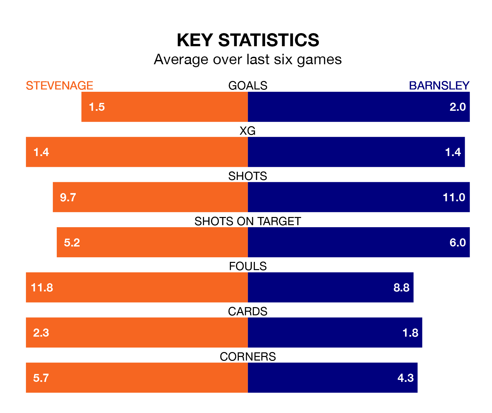

Barnsley face a challenge to maintain their high-scoring form away against a tight Stevenage defence on Saturday.
With 50 goals in 26 games, Barnsley are the joint-second-highest scorers in EFL League One ahead of the 3pm kick-off at the Lamex Stadium.
They face a Boro side who have scored 38 in 26 matches, but conceded only 25 goals, putting them joint-second among the league's tightest defences – only Bolton Wanderers have conceded fewer goals.
In Devante Cole, Barnsley have the league's sharpest shooter so far this season. He has notched 16 goals in 26 appearances.
His goal rate of one every 134 minutes is slightly quicker than that of Jamie Reid, Stevenage's top scorer with a goal every 131 minutes, and a total of 15 goals in 25 games.
The Tykes are fifth in the table after 26 games, of which they have won 14 and drawn seven, earning 49 points.
The Boro are two places behind the away team in seventh, with 13 wins and seven draws putting them on 46 points.
The hosts are in mixed form in EFL League One, with three wins and a draw from their last six games.
With four wins and two draws over that period, Barnsley's form is better – they have taken 14 points from 18, compared to Stevenage's 10.
Stevenage's last match was on January 13, a 1-0 win against Shrewsbury Town, with Reid getting the goal for the Boro.
Barnsley beat Carlisle United 2-1 last time out, on Tuesday, with Cole and Herbie Kane on the scoresheet.
Updated: 13:09 (UTC), 17/01/24